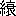

水莽草
田中貢太郎
水莽という草は毒草である。葛のように蔓生しているもので、花は扁豆の花に似て紫である。もし人が誤って食うようなことでもあるとたちどころに死んだ。そして、その水莽草を食って死んだ者の鬼を水莽鬼というのであるが、言い伝えによると、この鬼は輪廻を得て来世に生れてくることができないので、その草を食って死ぬる者のあるのを待っていて自分の代りにし、それによって生れ代るといわれている。それ故に水莽草の多い楚中の桃花江一帯には、この鬼が最も多いとのことであった。
この水莽鬼の伝説のある楚の地方では、同じ干支に生れた同年の者が交際するには干支の兄、干支の弟という意味で庚兄庚弟と呼びあい、その子や甥などは干支の伯さんという意見で、それを庚伯と呼ぶの風習があった。祝という男があって庚兄庚弟と呼びあっている同年の男の所へ出かけて往ったが、途中で喉が渇いたので何か飲みたいと思って、ふと見ると道傍へ板の台を構えて一人の媼さんが茶の接待をしていた。祝は喜んで其所へ往って、
「どうかお茶を一ぱい飲ましてください」
と言うと、媼さんはこころよく迎えて、
「さあ、さあ、どうかお休みくださいまし」
と、言って祝に腰をかけさし、静かに茶を汲んできたが、茶器も立派なうえに茶の色も良かった。祝はますます喜んで飲もうとしたが、みょうな匂いがして茶のようでないから飲まずに置いて、
「どうもありがとう」
と、言って起って出ようとすると媼さんが止めた。
「どうか、すこしお待ちなすってください」
と、言って媼さんはそれから内の方を見て、
「三娘、このお茶は、お客さんがお厭のようだから、其所にある好いお茶を汲んでいらっしゃい」
すると台の後から少女が茶を捧げて持ってきた。それは年の頃十四五の綺麗な少女で指輪も腕釧も透きとおった影の映りそうな水晶であった。祝は少女の手から茶碗をもらって、うっとりとなって口のふちに持って往ったが、茶の匂いがひどく良いので一息に飲んで、
「どうか、もう一ぱい」
と、言って二杯目の茶をもらったところで、媼さんが外へ出て往った。それを見て若い祝は少女の細そりした手を握ったが、少女が厭な顔もしないでその手の指輪の一つを脱いた。少女は頬を赧くしながらにっと笑った。祝の心は怪しくなってきた。
「あなたはどうした方です」
と、聞くと少女は囁くように言った。
「晩にいらっしゃい、わたし此所にいるわ」
祝は夜になってくることにして、同年の男の所へ往こうとしたが、非常に旨かった茶のことを思いだしてその葉をすこしもらって出かけ、そして、同年の男の家へ往ったところで気もちが悪くなった。祝は途中で飲んだ茶のためではないかと思って、同年の男にわけを話した。
「あぶない、そいつは水莽鬼だ、僕の親爺もそれで死んでるのだ、そいつはどうかしなくちゃならない」
同年の男が顔の色を変えて驚いたので祝もふるえあがったが、念のために少女からもらってきた茶の葉を出して見せた。同年の男は一眼見て断言した。
「たしかに水莽草だ」
祝はそこで指輪を出して少女の情状を話した。
「この指輪も貰ったのだが、鬼だろうか」
「待て、よ」
と、同年の男はちょっと考えて、
「これは、きっと三娘だ」
祝は媼さんが三娘と言って少女を呼んだことを思いだした。
「どうして、三娘ということが解ってるのだ」
「この南の村に、寇という富室があるのだ、三娘は其所の女だ、きりょうが良いので評判だったが、二三年前間違えて水莽草を食って死んだのだ、きっとこれが魅をしているのだ」
同年の男の傍にいる者が、鬼に祟られているものは、その鬼の家へ往って、鬼となった者が故つけていた襠をもらって、それを煎じて飲むと癒ると言った。同年の男は急いで南村の寇家へ往って、祝が水莽草を飲まされたわけを話して、三娘の襠をもらいたいと言ったが、寇の方ではそれによって女が生れ代ることができると思ったのでくれなかった。同年の男は怒って帰ってきて祝にそのことを話した。祝は歯ぎしりをして恨んだ。
「僕が死んだなら、あの女をどうしても生れ代ることのできないようにしてみせる」
同年の男は祝を乗物に乗せて舁いで送って往ったが、家に往きつくと共に死んでしまった。祝の母は泣きながら葬式をすました。祝には一人の男の子があったが、児の母親は柏舟節を守ることができないで、半年の後に児を置き去りにして他へ嫁入した。嫁に往かれた祝の母は孫の世話をしていたが苦しいので朝夕に泣いていた。一日例によって孫を抱いて泣いていると祝がしょんぼり入ってきた。母はひどく駭いて涙を押えて問うた。
「お前はなにしに来たの」
すると祝が言った。
「私は、お母さんの泣声が聞えると苦しいから、お母さんの世話をしにきたのです、私は死んでますけれども、家内も出来てますから、それも同時に伴れてきて、お母さんの苦労を分けさします、どうか安心してください」
母はそこで聞いてみた。
「お前の家内というのは、どうした方かね」
「それは寇三娘です、寇の両親は、みすみす私を殺したから、私は三娘を生れ代らせないようにしようと、三娘のいる所を探していると、友達の庚伯さんが教えてくれたので、往ってみると、三娘はもう任侍郎の家の児に生れ代っていたのですが、無理に捉えて伴れてきたのです、それが今の私の家内ですが、二人の間は仲が良いのですから、のんきです」
暫くして門の外から一人の女が入ってきた。見ると綺麗に化粧した美しい女であった。女は母に向ってお辞儀をした。祝は母に言った。
「これが三娘です」
二人がそうして揃っているのを見ると生きた人ではないが、母の心は慰められるのであった。祝はそこで三娘に母の手助けをさした。三娘は富豪の女で家事のことをしたことがないので、手際よく仕事をすることはできなかったが、気だてがよくて同情心に富んでいたから母は喜んだ。
二人はそれから母の許にいた。三娘は母に言ってそのことを自分の家に知らさした。祝はそれを好まなかったが、母は三娘の言うとおり寇家へ知らした。寇家の両親はそれを聞くとひどく駭いて車に乗って駈けつけた。そして、逢ってみると確かに三娘であるから声が出なくなるまで泣いた。三娘はそれをなぐさめた。三娘の母親は祝の家の貧しいのを見て三娘をなおさら可哀そうに思った。
「私は生きていないから、貧しくたって何ともないのです、それに祝さんのお母さんも可愛がってくだされるのですから、心配しないでください」
三娘の母親は聞いた。
「お前と同時にお茶を飲ましてた媼さんは何人だね」
「あれは倪という家のお媼さんですよ、自分で心にはじるから、私にやらしたのですわ、今は、もう郡城の漿を売る家の児に生れてるのです」
と、言った。三娘は祝の方を振返って、
「あなたは婿じゃありませんか、なぜあいさつをしてくださらないのです」
祝はそこで三娘の両親にあいさつをした。三娘はそれから厨へ入って往って母にかわって炊事をし、里の両親に御馳走をした。三娘の母親は女が今までしたことのなかった炊事をしているのがいかにも可哀そうであるから、家へ帰るなり二人の婢をよこして三娘の手がわりをさし、そのうえ金百斤、布帛十匹を贈り、また肉や酒の類はなくならないうちにうちにと送ってきた。寇家ではまた時どき三娘に帰※［＃「宀／必／冉」、246-7］をさしたが、二三日いると三娘は家が無人だから還らしてくれと言った。両親は長く置きたいので、それを引き留めて置くとひらひらと風に吹かれるようにして自分で帰って往った。寇の父親は祝のために大きな屋敷を作ってくれたが、祝は一回も寇家へ往かなかった。
某時、村で水莽の毒に中って死んだ者があったが、死んで間もなく蘇生した。村の者はそれを不思議がった。すると祝が言った。
「あれは、わしが活かしたのだ、あれは李九の魅であったが、わしがその鬼を追いのけたのだ」
それを聞いて祝の母が言った。
「お前も、何故、人を取って生れ代らない」
「私は、こんなことをする者に対して恨みがあるのですから、そんな奴を皆追いのけてしまいたいのです、くだらんことをしたくないのです、それに私はこうしてお母さんにつかえていれば良いのです、生れ代りたくはないのです」
それから村で水莽草の毒に中る者のあった時には、御馳走を供えて祝を祭ると徴があった。そして、十年あまりして祝の母が亡くなった。祝夫婦はひどく悲しんで葬式をしたが、他の客には姿を見せなかった。ただ、児に麻を着せて、葬式の礼をおこなわした。そして、児には礼儀を教えた。
祝夫婦は母を葬ってから、二年あまりして児に家内を持たしたが、それは任侍郎［＃「侍」は底本では「時」］の孫女であった。それは任侍郎の妾が女の児を生んだところで、数ヶ月にして亡くなったが、後になって三娘が祝に捉えられて伴れもどされたということを聞いたので、祝の家へ往って祝夫婦と親類づきあいをするという約束をしていた。とうとう任の家では孫女を祝の児の嫁にして、それから往来するようになったのであった。
一日、祝は児夫婦を傍へ呼んだ。
「上帝が、わしが人世に功があると言われて、わしを四涜牧龍君にしてくれたので、これから出かける」
児が何か言おうとしていると、庭のさきに四頭の馬をつけた黄※車［＃「膽」の「月」に代えて「巾」、247-15］が来たが、その馬の股には皆鱗があった。祝夫婦はそれを見ると盛装して乗った。児夫婦は泣きながらお辞儀をしたがその瞬間に見えなくなってしまった。その日寇家へは三娘が来て別れを告げた。両親は泣いて引き留めようとした。
「祝さんがもう出かけたのですから」
そして、門を出たかと思うと、もう見えなくなった。祝の児の名は鶚、字は離塵というのであったが、その鶚は寇家に請うて、三娘の遺骸をもらい受け、それと祝の遺骸を同時にして埋めたのであった。
●表記について
- このファイルは W3C 勧告 XHTML1.1 にそった形式で作成されています。
- ［＃…］は、入力者による注を表す記号です。
- 「くの字点」をのぞくJIS X 0213にある文字は、画像化して埋め込みました。
- この作品には、JIS X 0213にない、以下の文字が用いられています。（数字は、底本中の出現「ページ-行」数。）これらの文字は本文内では「※［＃…］」の形で示しました。
|
「宀／必／冉」
|
|
246-7 |
|
「膽」の「月」に代えて「巾」
|
|
247-15 |